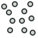

Online Help Toc/tr
FreeCAD ile ilgili herhangi bir sorunuz varsa veya yardıma ihtiyacınız varsa, lütfen önce yardım sayfasına bakın.
FreeCAD KILAVUZ için başka bir içindekiler tablosu daha bulunmaktadır.

- Giriş
- FreeCAD ile Çalışmak
- The Tezgahlar
 Tüm çalışma tezgahları için standart aletler
Tüm çalışma tezgahları için standart aletler Montaj tezgahı (1.0 sürümünde kullanılabilir)
Montaj tezgahı (1.0 sürümünde kullanılabilir) The BIM tezgahı
The BIM tezgahı The CAM tezgahı
The CAM tezgahı Taslak tezgahı
Taslak tezgahı FEM tezgahı
FEM tezgahı- Kontrol tezgahı
- Malzeme tezgahı (introduced in 1.0)
 Kafes tezgahı
Kafes tezgahı OpenSCAD tezgahı
OpenSCAD tezgahı Parça tezgahı
Parça tezgahı Parça tasarım tezgahı
Parça tasarım tezgahı
Nokta tezgahı- Tersine mühendislik tezgahı
 Robot tezgahı
Robot tezgahı Çizim tezgahı
Çizim tezgahı Elektronik tablo tezgahı
Elektronik tablo tezgahı Kaplama tezgahı
Kaplama tezgahı Teknik resim tezgahı
Teknik resim tezgahı- The Test Framework Workbench
- Kullanıcı tezgahları
{kind=link}
{kind=link}
{kind=link}
{kind=link}
{kind=link}
- FreeCAD'i özelleştirme
- FreeCAD için Uygulama Geliştirme
- Lisans
- FreeCAD Derleme
- Destek Araçları Oluşturmak
- FreeCAD Yapılandırmak
- Kaynak Belgeler
- Tanıtım
- Getting started
- Installation: Download, Windows, Linux, Mac, Additional components, Docker, AppImage, Ubuntu Snap
- Basics: About FreeCAD, Interface, Mouse navigation, Selection methods, Object name, Preferences, Workbenches, Document structure, Properties, Help FreeCAD, Donate
- Help: Tutorials, Video tutorials
- Workbenches: Std Base, Assembly, BIM, CAM, Draft, FEM, Inspection, Material, Mesh, OpenSCAD, Part, PartDesign, Points, Reverse Engineering, Robot, Sketcher, Spreadsheet, Surface, TechDraw, Test Framework
- Hubs: User hub, Power users hub, Developer hub